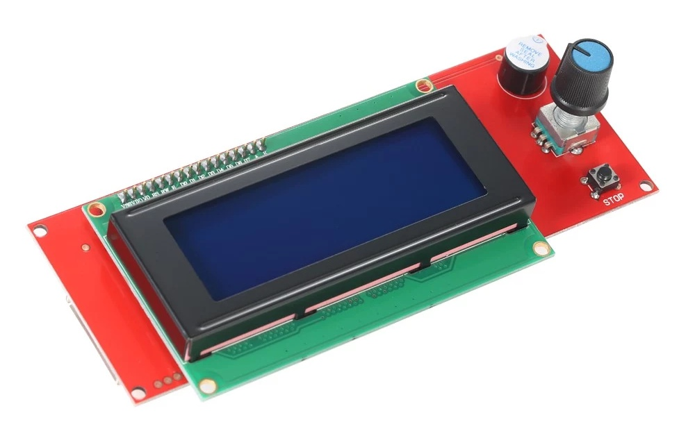

Programming, robotics, traveling
Привет! Необходимость собрать прошивку для UlTi-Steel у меня возникла по нескольким причинам:
Собственно идея следующая – написать небольшое руководство, по которому любой легко сможет изменить актуальную версию Marlin под свой UlTi-Steel, не опираясь на разработчиков самого принтера или какие-то другие репозитории.
Я буду рассказывать все на примере своего ульти с драйверами подключенными по UART, с контоллером RepRap SmartController с дисплеем LCD2004.

Добавление всяких ништяков будет в отдельной статьях, например Подключение BTT Smart Filament Sensor к SKR v1.3.
За основу я возьму последний на сегодняшний день тег 2.0.9.2 из мастер ветки (2.0.x) в upstream (Marlin). И буду добавлять коммиты сверху. Моя ветка urpylka_ultisteel будет располагаться в моём репозитории. Базовые настройки я возьму из официального репозитория Ivilol.
Версия
2.0.9.3получилась битой – на ней не работает дисплей.
Определяем информацию о вашей прошивке
Тк я вношу лишь настройки по конфигурации принтера, я не планировал менять версию и дату выпуска прошивки, тк версия указывает на исходный код используемой логики. Однако, я планировал поменять параметры, которые указывают на то, где найти исходный код прошивки и ссылку на веб-сайт, где можно найти описание с изменениям прошивки от оригинала (в моём случае это ссылка на эту статью).
/Marlin/src/inc/Version.h
#define SOURCE_CODE_URL "github.com/urpylka/Marlin"
...
#define WEBSITE_URL "urpylka.com/posts/post-56"
Однако, я понял, что даже это лишнее и отказался от этого тк:
WEBSITE_URL и не полностью.Менять MACHINE_NAME в этом файле также не стоит, тк переопределить его можно в основном конфигурационном файле, о чем пойдет речь в следующем пункте.
Меняем название машины, которое высвечивается на экране после загрузки
Configuration.h
#define CUSTOM_MACHINE_NAME "UlTi-Steel"
Определяем автора конфигурации
Configuration.h
#define STRING_CONFIG_H_AUTHOR "(urpylka, UlTi-Steel)" // Who made the changes.
Измененяем микроконтроллер для сборки
platformio.ini
default_envs = LPC1768
Определяем используемую плату принтера
Configuration.h
#ifndef MOTHERBOARD
#define MOTHERBOARD BOARD_BTT_SKR_V1_3
#endif
Определяем режим работы 2го Serial порта
Configuration.h
#define SERIAL_PORT_2 -1
Определяем порт МК для управления вентилятором (E0_AUTO_FAN_PIN)
Configuration_adv.h
#define E0_AUTO_FAN_PIN P2_04
Определяем драйвера двигателей
Для TMC2208 есть два варианта подключения:
TMC2208 – по UARTTMC2208_STANDALONE – через пины STP и DIRConfiguration.h
#define X_DRIVER_TYPE TMC2208
#define Y_DRIVER_TYPE TMC2208
#define Z_DRIVER_TYPE TMC2208
#define E0_DRIVER_TYPE TMC2208
Включаем мониторинг состояния драйверов
Configuration_adv.h
#define MONITOR_DRIVER_STATUS
Включаем вывод отладочной информации для драйвера
Configuration_adv.h
#define TMC_DEBUG
Меняем разрешение осей
Это количество шагов шагового двигателя на 1мм. Значение рассчитаны Ivilol.
Configuration.h
#define DEFAULT_AXIS_STEPS_PER_UNIT { 80, 80, 1600, 148.50 }
Меняем фидрейт для осей
Значение рассчитаны Ivilol.
Configuration.h
#define DEFAULT_MAX_FEEDRATE { 300, 300, 5, 100 }
Задаем лимит по оси Z
Configuration.h
#define Z_MAX_POS 270
Включаем работу EEPROM
Configuration.h
#define EEPROM_SETTINGS
...
#define EEPROM_AUTO_INIT
Выбираем контроллер управления
Configuration.h
На моей версии принтера установлен RepRap Smart Controller
#define REPRAP_DISCOUNT_SMART_CONTROLLER
На обновленной версии принтера используется контроллер FYSETC_MINI_12864
#define FYSETC_MINI_12864_2_1
Включаем звуковую индикацию при нажатии
Configuration.h
#define SPEAKER
#define LCD_FEEDBACK_FREQUENCY_DURATION_MS 100
#define LCD_FEEDBACK_FREQUENCY_HZ 5000
А также позволяем отключать её из меню:
Configuration_adv.h
#define SOUND_MENU_ITEM
Измененяем сторону вращения энкодера
Если требуется, расскоментируем нужные строки. В моём случае понадобилось расскоментировать параметр REVERSE_ENCODER_DIRECTION
Configuration.h
#define REVERSE_ENCODER_DIRECTION
...
// #define REVERSE_MENU_DIRECTION
...
// #define REVERSE_SELECT_DIRECTION
Настраиваем кодировку для LCD дисплея
В прошивке от Ivilol параметры в файле Configuration.h заданы следующим образом:
#define LCD_LANGUAGE ru
...
#define DISPLAY_CHARSET_HD44780 CYRILLIC
Я не планирую использовать русский язык и буду использовать стандартные настройки
#define LCD_LANGUAGE en
...
#define DISPLAY_CHARSET_HD44780 JAPANESE
Определяем цвет и яркость подсветки дисплея
По умолчанию в файле Configuration_adv.h заданы такие настройки:
#define LED_USER_PRESET_RED 255 // User defined RED value
#define LED_USER_PRESET_GREEN 128 // User defined GREEN value
#define LED_USER_PRESET_BLUE 0 // User defined BLUE value
#define LED_USER_PRESET_WHITE 255 // User defined WHITE value
#define LED_USER_PRESET_BRIGHTNESS 255 // User defined intensity
//#define LED_USER_PRESET_STARTUP // Have the printer display the user preset color on startup
Ivilol изменил их на такие:
#define LED_USER_PRESET_RED 0 // User defined RED value
#define LED_USER_PRESET_GREEN 255 // User defined GREEN value
#define LED_USER_PRESET_BLUE 255 // User defined BLUE value
#define LED_USER_PRESET_WHITE 0 // User defined WHITE value
#define LED_USER_PRESET_BRIGHTNESS 150 // User defined intensity
#define LED_USER_PRESET_STARTUP // Have the printer display the user preset color on startup
Тк у меня используется RepRap Smart Controller, я оставлю стандартные настроки.
Включаем поддержку SD карт
Configuration.h
#define SDSUPPORT
Проверка контрольных сумм для файлов на карте
Configuration.h
#define SD_CHECK_AND_RETRY
Включаем работу с SD картой из RepRap Smart Controller
Configuration_adv.h
#define SDCARD_CONNECTION LCD
Определяем толщину используемого пластика
Configuration.h
#define DEFAULT_NOMINAL_FILAMENT_DIA 1.75
Включаем работу нагревательного стола
Configuration.h
#define TEMP_SENSOR_BED 1
Определяем конфигурацию нагрева стола
В первую очередь, нужно включить ПИД регулятор, что это можете прочитать Википедии.
Configuration.h
#define PIDTEMPBED
И изменим дефолтные значения на расчитанные компанией Ivilol:
#define DEFAULT_bedKp 97.56
#define DEFAULT_bedKi 8.51
#define DEFAULT_bedKd 279.73
Задаём минимальную температуру при которой разрешаем выдавливание пластика
Это нужно в первую очередь для печати воском и другими пластиками которым требуется низкая температура.
В прошике от Ivilol задана температура 80 градусов Цельсия. Однако я не планирую это и оставлю девольное значение в 170 градусов. Для защиты механизма фидера и фитингов.
Configuration.h
#define EXTRUDE_MINTEMP 170
Задаём максимальную длину пластика в мм, которую можно выдавить одной командой
Сделано для безопасности, чтобы по ошибке принитер не выдавил всё что есть. В процессе печати это не страшно, тк слайсер делает много небольших выдавливаний. А вот при загрузке пластика – актуально. Тк у меня боуден, то меняю параметр с 200мм на 1000мм.
Configuration.h
#define EXTRUDE_MAXLENGTH 1000
Меняем температуру экструдера и стола для операции преднагрева
Ivilol прелагает использовать для этого следующие температуры:
Configuration.h
#define PREHEAT_1_TEMP_HOTEND = 190
...
#define PREHEAT_2_TEMP_HOTEND = 230
#define PREHEAT_2_TEMP_BED = 90
Я не понимаю зачем это было сделано, поэтому я оставлю значения по умолчанию:
Задаём клиренс при калибровке стола
Ivilol задали его равным нулю. Для меня это спорный вопрос, с одной стороны хорошо что экструдер пойдет по столу до следующей точки. С другой стороны, если стол будет задран, то экструдер упрется или прокорябает по нему.
Я думаю что дефотное значение в 5мм вполне объективно.
Configuration.h
#define Z_CLEARANCE_BETWEEN_PROBES 5
Включаем автоматическую парковку
Configuration.h
#define NOZZLE_PARK_FEATURE
Настраиваем работу ADVANCED_PAUSE_FEATURE
Такие параметры заданы Ivilol, я сделаю также.
Configuration_adv.h
#define FILAMENT_CHANGE_UNLOAD_FEEDRATE 300 // (mm/s) Unload filament feedrate. This can be pretty fast.
...
#define FILAMENT_CHANGE_UNLOAD_LENGTH 800 // (mm) The length of filament for a complete unload.
// For Bowden, the full length of the tube and nozzle.
// For direct drive, the full length of the nozzle.
// Set to 0 for manual unloading.
...
#define FILAMENT_CHANGE_FAST_LOAD_FEEDRATE 300 // (mm/s) Load filament feedrate. This can be pretty fast.
...
#define FILAMENT_CHANGE_FAST_LOAD_LENGTH 800 // (mm) Load length of filament, from extruder gear to nozzle.
// For Bowden, the full length of the tube and nozzle.
// For direct drive, the full length of the nozzle.
...
#define ADVANCED_PAUSE_CONTINUOUS_PURGE // Purge continuously up to the purge length until interrupted.
...
#define PARK_HEAD_ON_PAUSE // Park the nozzle during pause and filament change.
Включаем сбор статистики принтера
Configuration.h
#define PRINTCOUNTER
Включаем вывод информации о принтере
Configuration_adv.h
#define LCD_INFO_MENU
Добавляем кастомные в команды в главное меню (CUSTOM_MENU_MAIN)
Вы можете добавить в главное меню до 25 кастомных команд. Я этого делать не стал, тк все, что мне нужно у меня и так есть. Однако если вам это нужно обратите внимание на секцию Custom Menu: Main Menu в файле Configuration_adv.h.
Обычная калибровка включается расскоментированием опции LEVEL_BED_CORNERS в Configuration.h. Я не вижу в этом необходимости, однако мб кому-то это мб полезно, учитывая, что Ivilol заморочились и добавили алгоритм калибровки по трем точкам.
Для этого они в Configuration.h внесли новый дефайн:
#define LEVEL_CORNERS_3POINT
А также заменили:
#define LEVEL_CORNERS_INSET_LFRB { 30, 30, 30, 30 } // (mm) Left, Front, Right, Back insets
на
#define LEVEL_CORNERS_INSET_LFRB { 5, 5, 5, 5 } // (mm) Left, Front, Right, Back insets
чтобы калибровка снизить общую ошибку при калиброке по трём точкам.
А также внесли изменения в файл с логикой калбровки /Marlin/src/lcd/menu/menu_bed_corners.cpp:
Было:
line_to_z(LEVEL_CORNERS_Z_HOP);
switch (bed_corner) {
case 0: current_position = lf; break; // copy xy
case 1: current_position.x = rb.x; break;
case 2: current_position.y = rb.y; break;
case 3: current_position.x = lf.x; break;
#if ENABLED(LEVEL_CENTER_TOO)
case 4: current_position.set(X_CENTER, Y_CENTER); break;
#endif
}
Стало:
line_to_z(LEVEL_CORNERS_Z_HOP);
switch (bed_corner) {
case 0: current_position = lf; break; // copy xy
case 1: current_position.x = rb.x; break;
#if ENABLED(LEVEL_CORNERS_3POINT)
case 2: current_position.set(X_CENTER, rb.y); break;
#else
case 2: current_position.y = rb.y; break;
case 3: current_position.x = lf.x; break;
#if ENABLED(LEVEL_CENTER_TOO)
case 4: current_position.set(X_CENTER, Y_CENTER); break;
#endif
#endif
}
Также этот алгоритм менял DeZepTup, ветка main коммиты bb9ad1fc6a02e290b30cf57b7e401b10b675026a и b048505a395452af94f228470fb653eac1ba1877, добавив туда работы с BLtouch.
Я пока не вижу необходимости в такой калибровке, поэтому если и буду использовать, то обычную – по четырем точкам.
Я работаю с исходным кодом в VScode. Для сборки использую плагин Platformio. Как установить плагин и собрать прошивку хорошо изложено в официальной документации Marlin.
Эта статья и ветка на гитхабе будет обновляться по мере того, как я буду это использовать сам. Если есть замечания или предложения пишите в комменты ниже.